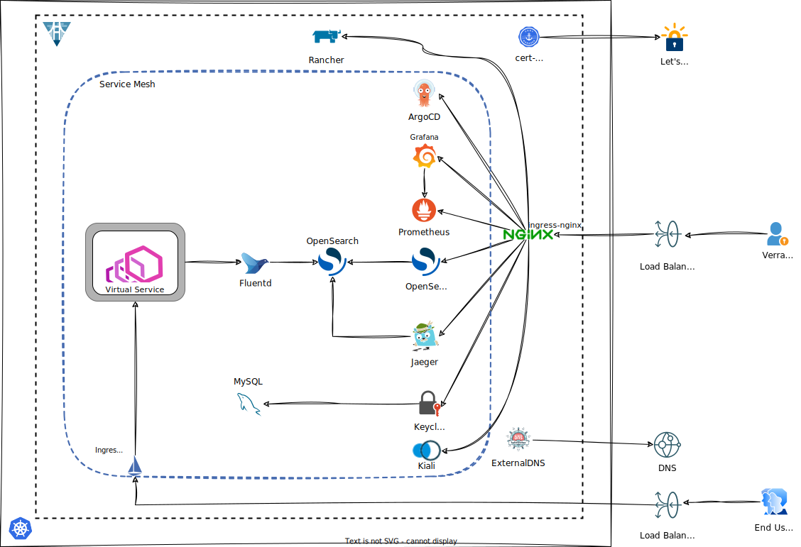

Single Production Cluster

Create the OKE cluster
- Copy terraform.tfvars.example to terraform.tfvars
cp terraform.tfvars.example terraform.tfvars
- Provide values for the following input variables:
api_fingerprintapi_private_key_pathtenancy_iduser_idcompartment_idssh_public_key_pathssh_private_key_path.
- Set your tenancy's home region using
home_regione.g.
home_region = "us-ashburn-1"
- Configure the cluster's provider in admin.tf:
providers = {
oci = oci.sydney # replace with the desired region's name
oci.home = oci.home
}
- Configure the cluster's parameters:
admin_region = {
admin_name = "admin"
region = "Sydney" # must match the provider's region in step 4
vcn_cidr = "10.0.0.0/16"
pods = "10.200.0.0/16"
services = "10.100.0.0/16"
}
- Configure the following input variables:
get_kubeconfigs = false
install_verrazzano = false
- Create the cluster by running Terraform:
terraform init
terraform plan
terraform apply
- After Terraform has finished the apply operation, it will output a convenient SSH command you can copy. This command will allow you to ssh to the operator host.
Generate Verrazzano Installation scripts
You will now generate the installation script.
- Configure the following input variables:
get_kubeconfigs = true
install_verrazzano = true
- Configure the Verrazzano profile:
verrazzano_profile = "prod"
-
If you need to use your own DNS, you need to configure DNS before you run Terraform and the installation scripts. Else, the installation scripts will use nip.io.
-
Run Terraform again:
terraform init
terraform plan
terraform apply
Running terraform apply again will configure access to the cluster, give it a friendly name and upload the installation script to the operator host.
Run Verrazzano Installation scripts
You will now install Verrazzano in your cluster.
- These steps are to be run manually today. We will automate them in the future.
- The scripts are to be run from the operator host.
-
ssh to the operator host by copying the convenient SSH command.
-
Install the Verrazzano Platform Operator
cd /home/opc/vz/operator
bash install_vz_operator_admin.sh
- Check if the operator has installed sucessfully:
bash check_vz_operator_admin.sh
- If you are using your own DNS domain, obtain the yaml for DNS and create a secret:
cd /home/opc/vz/oci
bash get_oci_secret.sh
echo >> oci.yaml
bash create_oci_secret_admin.sh
- Install Verrazzano:
cd /home/opc/vz/clusters
bash install_vz_admin_cluster.sh
- Wait for Verrazzano to be installed:
bash vz_status.sh